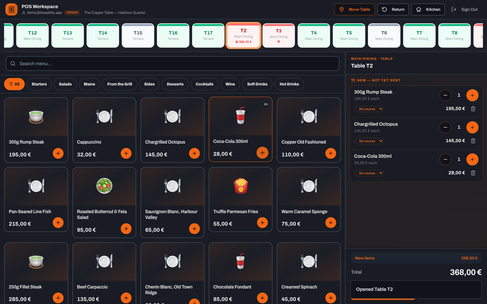
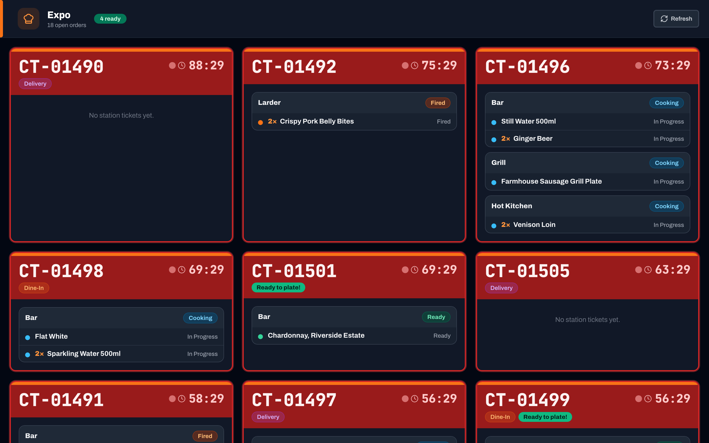
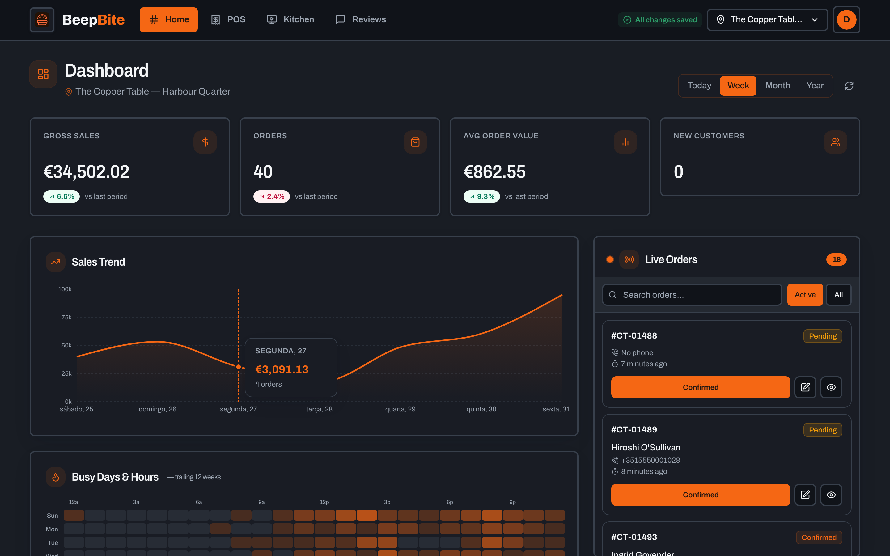
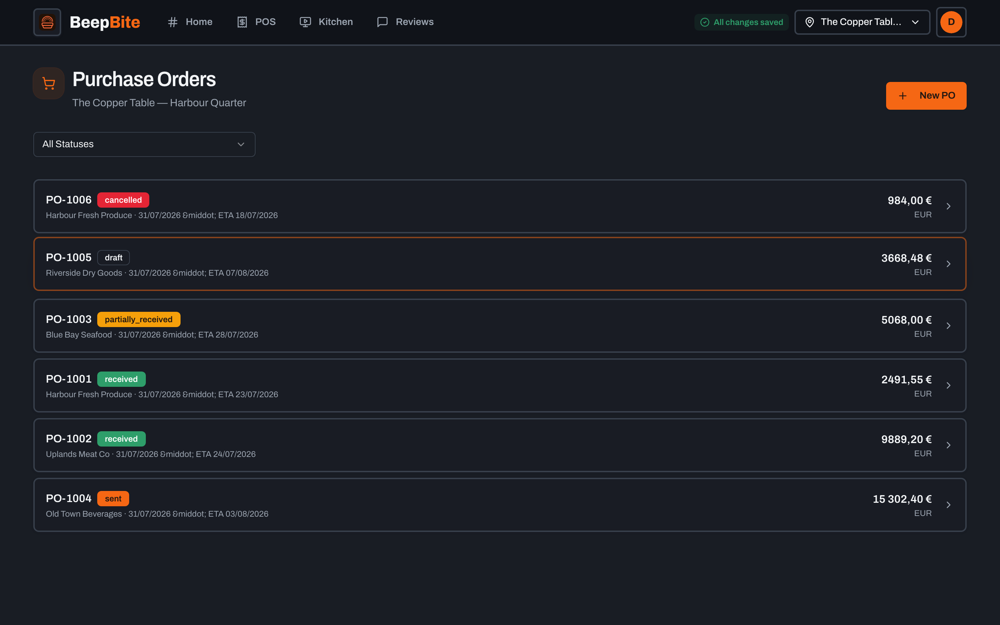
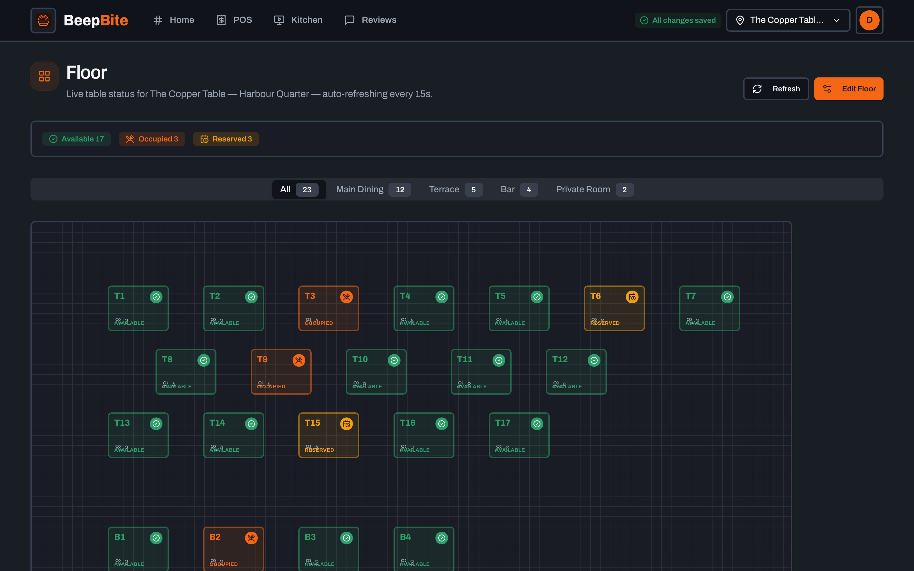
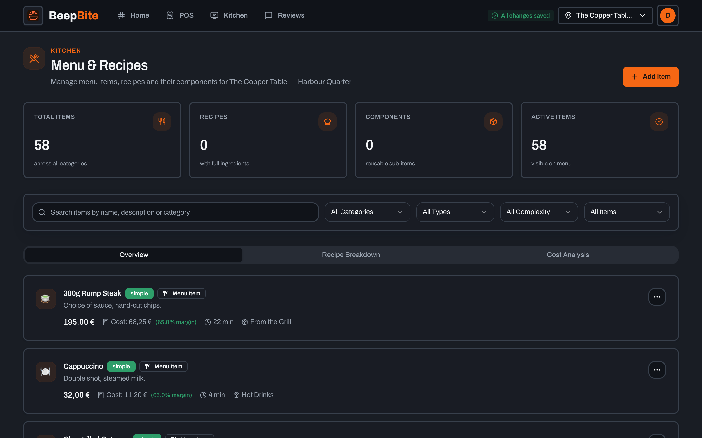

A restaurant point-of-sale you actually own.
Front of house, kitchen, delivery, and ordering from wherever your customers already are — one system, running on your own hardware.
Take the order, cook it, serve it, deliver it, know what it cost you. Ordering isn't tied to one vendor: a shop turns on the channels its customers actually use, and every one of them lands in the same order stream.
- Your own database
- No per-order fee
- MIT or Apache-2.0
Counted from this repository, not from a pitch deck: backend/migrations/001_baseline.sql, the router registrations under backend/internal/, and the fact that BeepBite records tenders rather than processing them — the card machine on your counter is still your card machine.
POS, kitchen display, floor plan, orders, inventory, purchasing, gift cards and loyalty are substantially built and covered by integration and e2e tests. WhatsApp ordering works today against your own Meta credentials; Discord, Slack and email/DMTAP adapters are designed but not yet built — see the roadmap. Postgres is required today; the single-binary-plus-SQLite target is planned, not shipped. Read the honest feature-by-feature status before deploying this anywhere real.
See BeepBite in action
Every image below is captured by npm run screenshots against a live instance — a real Postgres, a real Go API, signed in through the real form as a seeded restaurant called The Copper Table. Nothing here is a mockup.
A till that keeps up with the counter
Tabs and tables, modifiers, courses, splits by seat or by amount, voids, comps and manager approval — with the open ticket always in view on the right.
- Split tender across cash, card, transfer and voucher
- The 86 list greys the item out mid-service
- Idempotency keys, so a retried tap can't double-charge

POS workspace · table T2 open, three items, 368,00 € running
The pass, without anybody shouting
Tickets route to the station that has to cook them and surface again on expo when every station is done. Live over server-sent events — no polling loop, no message broker to operate.
- Per-station routing with a fan-out expo queue
- Age colouring, so the oldest ticket is impossible to miss
- Dark chrome on purpose — this screen lives in a kitchen

Kitchen display · expo · 18 open orders, 4 ready to plate
What the day actually did
Sales trend, busy hours, channel mix and the live order feed on one screen — read straight out of your own database, with nothing aggregated by anybody else first.
- Counter vs. WhatsApp vs. delivery, side by side
- Live orders as they land, whatever the channel
- Your history stays readable whether or not you ever pay anyone

Home · sales trend, busy hours and the live orders feed
Know what the plate cost before you price it
Suppliers, purchase orders, goods receipts and three-way invoice matching, with recursive recipe costing behind every menu item and waste recorded against the batch it came from.
- Recipes cost recursively — sub-recipes included
- Goods receipts reconcile against the invoice, line by line
- Reorder suggestions from real consumption, not guesswork

Inventory · purchase orders and goods receipts

Floor plan · live table state by room

Menu · one edit, every channel
Everything you need to run service — without juggling apps.
Front of house, kitchen and stock, money and people, ordering and delivery. Nothing here is claimed as working unless it is — that's the point of the chips.
Touch POS Built
Tabs, splits, voids, comps and manager approval, with a floor plan and table management alongside a customer-facing display.
Kitchen display Built
Per-station routing and expo, so an order lands on the right screen in the kitchen without a runner shouting it across the pass.
Cash drawer & tenders Built
Drawer sessions and reconciliation across cash, card, transfer and voucher tenders — recorded, never processed.
Gift cards & loyalty Built
Gift cards, store credit, house accounts, promotions and coupons, plus invoicing and house-account billing.
Inventory & purchasing Built
Recipes and costing, the 86 list, suppliers, purchase orders, goods receipts, invoice matching, waste tracking and reorder suggestions.
Delivery & tracking Built
Delivery zones, a driver app and live tracking with a public customer tracking page — built, though less exercised than the POS, and its ETA/map panel has a known bug (see docs).
WhatsApp ordering Built
A customer messages the restaurant's number and orders in the app they already use all day. Needs your own Meta Cloud API credentials — off without them.
QR-at-table ordering Built
A code on the table opens ordering in the browser, no app install, landing in the same order stream as every other channel.
Discord ordering Planned
A channel adapter, same shape as WhatsApp: order in a Discord server a community already uses. Designed, not built.
Slack ordering Planned
Order from a Slack workspace — useful for office lunch runs and corporate accounts. Designed, not built.
Email ordering Planned
Ordering by plain email is designed, not built. The version of it that runs over DMTAP — the mail profile of the KOTVA substrate — is further out again and experimental: see how that is staged.
Every integration is optional Built
WhatsApp, maps and AI are each off unless you supply your own credentials. A fresh install makes no outbound network calls at all.
Ordering is meant to be channel-agnostic, and it is worth being exact about how far that has got: the two built channels are each their own direct integration, not yet plugins behind a shared adapter interface. One order stream is the architecture that is coming; today it is the direction, and the roadmap says so in the same words.
A POS that pays for itself
Two ways a counter stops belonging to the restaurant — and neither one is a technology problem. Marketplaces take 15–30% of every order and keep the customer relationship. Cloud POS vendors charge per terminal, per month, and hold your sales history hostage to a subscription.
No marketplace cut
BeepBite is not a marketplace and will not bring you customers. It makes sure nothing sits between you and the ones you already have.
No subscription lock
A Go API and a React app against a Postgres you control. There is nobody to cut you off, because there is no service to stop paying for.
No PCI scope
Tenders are recorded, never processed. "Card" means your own card machine on your own counter — no settlement delay, no cut on the way through.
No client-side isolation
Row-level security is enforced server-side from the authenticated identity, never from a parameter the frontend supplies. The database refuses the leak.
One order stream, whatever the source
Orders arrive through whichever channels a restaurant has turned on and land in one stream on hardware it controls. The two built channels are direct integrations today; the shared adapter interface that makes the rest drop in is designed, not written.
Build the menu
Categories, items, modifiers and recipes — entered once, on your instance, and used by every channel you turn on.
Connect WhatsApp — or don't
Add your own Meta Cloud API credentials to turn the channel on. Without them it stays dark, and the counter still works.
Serve & notify
Take orders at the counter or over WhatsApp. Tap "ready" and the customer gets a message instead of a buzzer.
one order stream
nothing phones home
Solid border — built and wired inDashed border — designed, not built
One shape by the time it is cooked
Whatever the channel, an order reaches the kitchen as the same object, so it routes to the right station — and, if it is going out, to a driver with a tracking link — regardless of where it started.
Live without a broker
Updates are server-sent events. No polling loop, no message queue to operate, nothing extra to keep alive at 9pm on a Friday.
No channel is the product
WhatsApp is simply the adapter that shipped first. The order stream, the kitchen and the books do not know or care which one an order arrived through, which is what keeps any of them replaceable.
One binary on your machine — and nothing else required
BeepBite is a standalone application first. Everything below and to the right of that is optional, and each piece is labelled with what it actually is today.
One shop, one machine Built
A laptop in the back office, a machine in the cupboard, or a VM you rent. Linux or macOS, Intel or ARM — four release binaries, plus the Postgres it needs. No Vulos, no account, no network beyond your own.
More than one branch Planned
Each branch runs its own copy and stays the single writer for its own orders, drawer and shifts; the menu and the stock ledger replicate between them. Designed in detail — hybrid-logical-clock oplog, manual peer enrolment, a USB stick as a valid transport — and not built yet. Read the design in the roadmap.
Over a shared substrate Experimental
Longer term, branch-to-branch replication and ordering channels can ride KOTVA and its mail profile DMTAP, so shops that don't share an owner can still exchange a signed fact. That work is research: no KOTVA code is in this tree, none is required, and it stays gated until it earns its way in.
What has to be reachable
A machine on the shop's own network, with a Postgres beside it, is a complete installation. Nothing here needs a port forward, a domain or a tunnel unless a customer is ordering from off the premises.
- Till, kitchen display, floor plan, back officeOrdinary LAN traffic to the binary you started.No inbound
- Driver app and staff on the shop's Wi-FiSame listener, same network.No inbound
- WhatsApp orderingMeta's Cloud API is webhook-only — it POSTs to
/webhooks/whatsapp, verified against your app secret. That is a decision Meta made, not one BeepBite made.Public HTTPS - QR-at-table, web storefront, tracking pageA customer's phone has to reach it, so it needs a URL like any other web page.Public HTTPS
- Online-payment returnThe gateway redirects the buyer back to
BEEPBITE_API_PUBLIC_URL. Optional, and never verified against a live processor.Public HTTPS
Getting a URL is a commodity problem. cloudflared, a Tailscale funnel, ngrok, a small VPS running nginx, Ephor's reachability broker, the Vulos relay — BeepBite cannot tell them apart, and there is deliberately no provider abstraction in the code: no interface, no plugin registry, no vendor list. It is one string, BEEPBITE_API_PUBLIC_URL. Swapping ngrok for your own proxy is editing a line and restarting.
Everything optional is bring-your-own
Quoting .env.example: "Everything below is optional. BeepBite runs without any of it." Each seam takes your credentials, and each one degrades to something sensible when you skip it.
- WhatsApp — your own Meta credentialsNo BeepBite number pool and no shared account. Without them the channel is entirely dark and the counter is unaffected.Optional
- Maps — your own Mapbox tokenAddress autocomplete for delivery. Without it the chatbot asks the customer to drop a pin instead.Optional
- AI — your own Gemini keyFloor-plan generation and the owner assistant. Off entirely without a key.Optional
- Email — SMTP by defaultSMTP is the only transport you can point at your own server without signing up to anybody; SendGrid, Mailgun and SES are alternatives, not defaults.Optional
- Online payments — your own gatewayVerify-on-return and fail-closed. Unit- and integration-tested, and never run against a live processor. Card at the counter stays your own card machine.Optional
A fresh install with none of these set makes no outbound network calls at all. That is the property the rest of the page depends on, and it is the reason each of these is a credential you supply rather than a service we broker.
There is no BeepBite cloud Built
- Nothing to sign up for. No hosted tier, no seat count, no dashboard anybody else operates. The copy you run is the only copy that exists.
- "Cloud" here is just another node. If you want the till reachable from outside the shop, you deploy a second machine you own — a VPS, or a reachability broker like Ephor that your box dials out to. It is your node either way; we do not run one for you.
- A fresh install phones nobody. WhatsApp, maps and any AI feature are dark until you supply your own credentials.
What Vulos is, and isn't Optional
- Never a runtime dependency. BeepBite runs standalone against your own Postgres. A hard dependency on the Vulos OS, its control plane or KOTVA is forbidden by the product standard, not merely avoided.
- It is the long-term answer to sharing. Where the same operator runs several branches — or several operators want a shared fact neither of them owns — Vulos is where that lands, rather than a central BeepBite service nobody asked for.
- None of it is load-bearing today. The OS integration is designed and the substrate work is experimental. If Vulos vanished tomorrow, every claim on this page would still be true.
Self-hosting is the only mode
There is no hosted BeepBite, no free tier, no seat count, and no account with us — because there is nothing to sell you. It is MIT/Apache-2.0-licensed software you run on hardware you already have.
Your database, your building
Postgres you control. Nothing phones home, and a fresh install makes no outbound network calls at all. A single-binary-plus-SQLite build is planned but not shipped — Postgres is required today.
No payment facilitator
BeepBite records tenders; it never touches your money. "Card" means your own card machine on your own counter. No PCI scope, no settlement delay, no cut of your revenue.
Every integration is opt-in
WhatsApp, maps and AI are each off unless you supply your own credentials. As Discord, Slack and email adapters land, the same rule applies.
# 1. Database createdb beepbite # 2. Configure — set DATABASE_URL and JWT_SECRET cp .env.example .env # 3. Migrate cd backend && go run ./cmd/migrate --env=local --up # 4. API go run ./cmd/server --env=local # 5. App cd .. && npm install && npm run dev # http://localhost:5173 # want something to look at first — full demo restaurant cd backend && go run ./cmd/seedcopper --env=local --clean
The docs on this site are copied straight from this repository's own docs/ by npm run docs:sync, so what's published here can't drift from what's actually in the repo.
No feature is described as working unless it is in the tree, wired into the running server, and exercised by a test. Where something is half-built, the docs say so and name the defect — because a feature that silently does nothing is worse than one that admits it isn't built.
ROADMAP.md · the honesty conventions, and they're load-bearing
Part of VulOS
Vulos publishes one thing: the OS. The Vulos OS, all its apps (BeepBite included) and the app store are free and open-source, dual MIT OR Apache-2.0 — you self-host them. You self-provision and self-pay your own box; Vulos does not host or provision boxes, and does not bill for anything.
- Vulos OS — the web-native desktop shell that hosts the apps
- ofisi — docs, sheets, slides, PDF and whiteboards
- Vulos Files — file storage and P2P sharing, built into the OS
- Ephor — self-hostable reachability broker the box dials out to
- llmux — sovereign AI gateway
BeepBite's role: the restaurant point-of-sale and ordering app. It runs standalone against your own Postgres — that is the supported way to run it — and is designed to also be hosted as an app by the Vulos OS, the same binary with the OS wiring identity and scoped storage in front of it. That is the long-term answer to sharing one menu, one stock ledger and one set of books across several branches without a central service. Ephor, the control plane and KOTVA are optional seams, KOTVA is experimental, and a hard runtime dependency on any of them is forbidden.
Explore VulOSNobody to call — everything to read
There is no support desk, because there is no service and no subscription funding one. What there is instead: the source, the docs, and an issue tracker where the answers are public.
Own your counter today.
Clone it, point it at a Postgres, seed the demo restaurant and click around a real till. Nothing to sign up for, nobody to email, no card.
Pre-1.0 · self-hosted · MIT or Apache-2.0 · Postgres required today